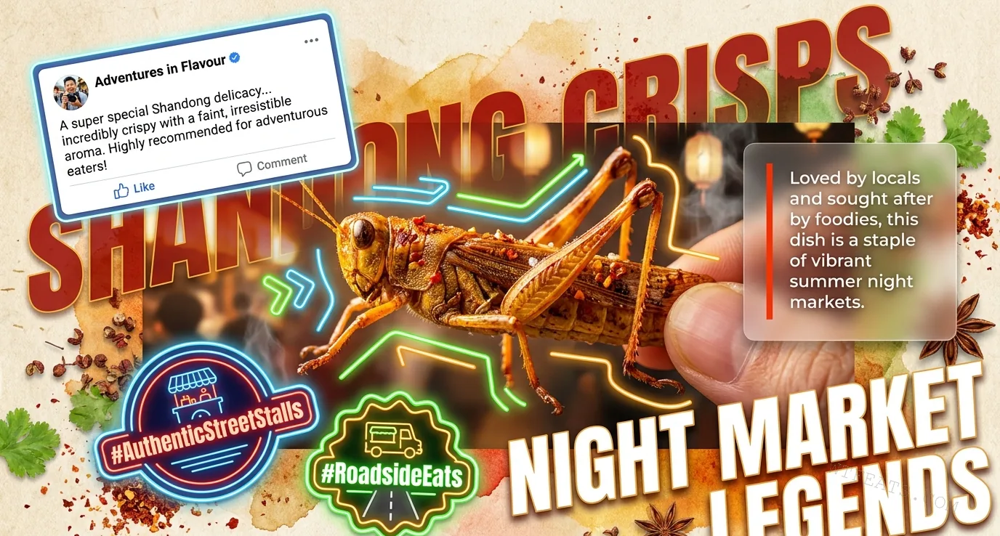

The Legend

Not a novelty. A night-market institution.
In the bustling summer night markets of Shandong, the fried grasshopper stall is not a curiosity — it is a destination. Locals queue for it. Food bloggers seek it out. The dish has earned its place as a staple of vibrant summer night markets, alongside grilled skewers and cold beer. The neon signs don't say "try something weird." They say "the crunch is back."